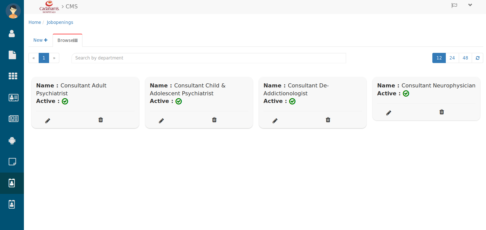
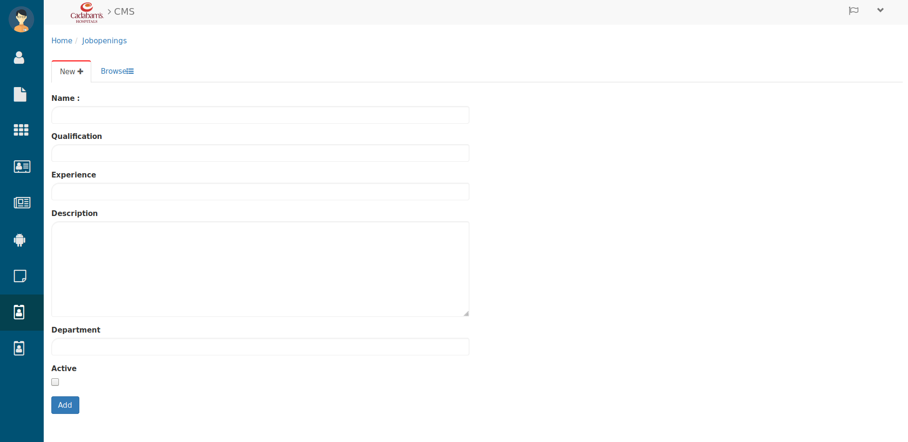
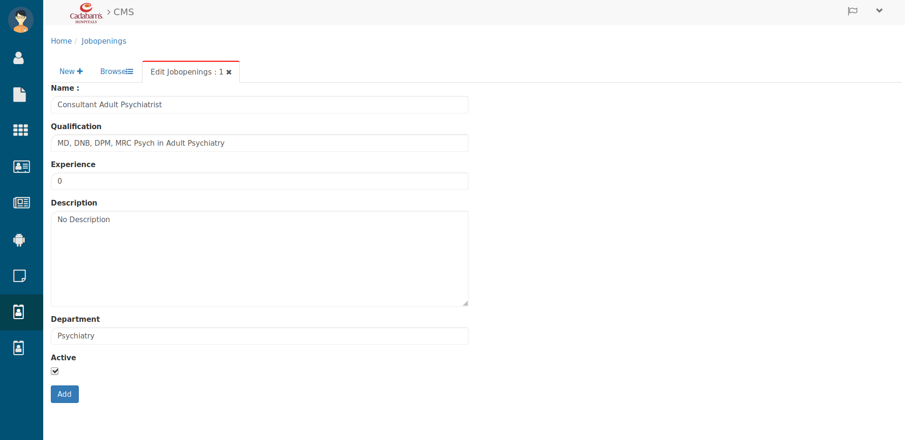

Jobopenings¶
Browsing Jobopenings¶

Jobopenings
Here you can browse all Jobopenings
- Search the Job opening in search bar by entering their Departments.
- Use the page and refresh button to Browse Jobopenings.
- To create a new Jobopenings click on New+ then you will see below tab.
Creating Jobopenings¶

Creating Jobopenings
Here fill the above details like
- Enter the designation/post name in Name text-area.
- Enter the Qualification criteria then
- Enter the Experience whatever you want to set for that designation.
- Below that you can write the description in Description text-field.
- then search and select Department for that designation.
- Check the Active checkbox in the job openings is available else you can unchecked.
- Then hit the Add button and it will be added in Jobopenings list, which you can check in Jobopenings tab.
- In-case opening has ended so now you have to edit that opening so click on their Edit(pencil) icon. then you will see below tab.
Editing Jobopenings¶

Editing Jobopenings
And here by unchecking that active checkbox you can edit their status and details like designation Name, Qualification, Experience, Description, Department.
- Then hit the Add button and it will be updated in job openings list, which you can check in Jobopenings tab.
Let’s see how it looks from user perespective